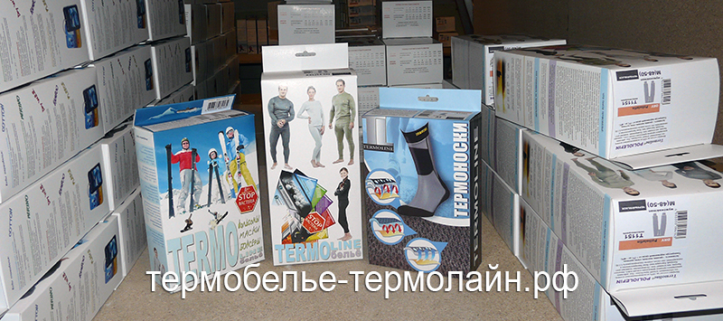

Даже когда на улице сильный мороз и холод буквально пробирает до пят, любители активной жизни вряд ли согласятся остаться дома, им больше по вкусу бросить вызов всем стихиям. Ведь это превосходный способ проверить собственные силы и выносливость, покоряя вершины гор, катаясь на сноуборде и преодолевая чемпионские расстояния на лыжах. Все это и есть драйв, настоящая жизнь.
Абсолютно не нужно отказываться от любимых занятий, которое приносят настоящее удовольствие и душевный комфорт. Напротив, ничто не должно помешать жить полной жизнью, ощущая дыхание свободы. Именно в этом и помогает Российское термобельё. Произведенное в нашей стране, оно на 100% соответствует климатическим особенностям и максимально подходит для использования здесь.
Однако не стоит думать, что термобелье необходимо исключительно при занятиях спортом. Оно незаменимо и в повседневной жизни. Надежно уберегая организм от холода, оно способствует тому, что человек просто не ощущает мороза, даже когда ему приходится длительное время находиться в неподвижном состоянии, например, стоя на остановке.
Термобельё, история
Наверно, не нужно говорить о том, что эти изделия получили всеобщее признание и популярность относительно недавно. Сегодня все родители стараются приобрести комплект такого белья для собственного чада. Однако не многие знают, что небезызвестные панталоны стали прародителями этих чудо-изделий. Сами панталоны принято считать изобретением жены Генриха II, Екатерину Медичи. Тогда такие штаны были произведены все с той же целью – защитить тело от простуд и холода. Облагородив внешний вид изделия путем добавления кружев, королева Франции была абсолютно довольна новой вещью в своем гардеробе. Панталоны сразу же завоевали сердца дам и стали модной тенденцией. Мужчины, как и женщины, тоже стремились защитить свой организм от простудных заболеваний. В качестве их термобелья использовались кальсоны из фланели, которые были созданы по принципу женских панталон. Конечно, современное термобелье, купить которое предпочитают заботящиеся о своем здоровье люди, значительно отличается от своих прототипов. Сегодня это комфортные изделия, плотно облегающие тело, созданные по всем правилам модных тенденций и в соответствии с основными требования.
Современное термобелье, особенности
Как правило, такие модели состоят из нескольких слоев. Нижний слой впитывает и отводит влагу, средний слой способствует выходу влаги наружу, а внешний слой препятствует проникновению холода внутрь и защищает от неблагоприятных внешних условий. Благодаря этому принципу многослойности такая одежда прекрасно справляется со всеми своими функциями.
Важно знать и еще один момент. К термобелью предъявляются особые гигиенические требования, поэтому качественные изделия препятствуют размножению бактерий и, например, туристы могут по нескольку дней не снимать изделия, не беспокоясь за состояние своего организма.
Приобретая термобелье, следует знать и об основных способах ухода за ним. Эти изделия сами по себе уникальны, поэтому и относиться к ним следует бережно. Так, стирать изделия можно вручную, использование автоматической стиральной машины допустимо, но только с режимом деликатной стирки. Только тогда оно не потеряет свои прекрасные свойства и будет долгое время радовать своего обладателя.
основные функции термобелья
Сохранение тепла
Этот эффект достигается за счет ультрасовременных материалов, используемых при производстве белья. Специальное переплетение с огромным количеством маленьких ячеек создает воздушную прослойку, которая, при нагревании за счет тепла Вашего тела, создает защитную прослойку между телом и холодной наружной средой.
Отвод влаги с поверхности тела
Защитная прослойка в термо белье из нагретого воздуха между Вашей кожей и наружной средой, за счет разницы давления выводит выделяемую влагу на внешний слой белья, где она моментально испаряется, не создавая при этом дискомфорта.
термобелье предназначено
для занятий спортом, повседневной носки, активного отдыха на природе, где периоды повышенной нагрузки сменяются состоянием покоя ( катание на лыжах в лесу, сноубординг, туризм, велоспорт и занятие спортом в плохих погодных условиях - альпинизм, горные лыжи и др.).
К особому виду спорта относится охота - это и утомительные паузы, и большие физические нагрузки, когда начинаешь обращать внимание на взмокшее тело.
Увлечения зимней рыбалкой, становятся более приятными, когда на Вас одето термо белье (при сильном намокании оно способно защитить от переохлаждения).
Для езды на снегоходе или квадрацикле, даже под непродуваемой курткой, используют термобелье.
Занятие массовыми видами спорта (для хоккея, футбола).
Активный отдых на природе - катание с горки на санках, игра с детьми в снежки.
Прогулки на улице в холодный морозный день.
виды термобелья
Термобелье бывает для высокой, средней и низкой физической активности. Для каждой из них создан свой тип белья, которое имеет разный состав материала и обладает необходимыми характеристиками.
Например, термобелье на каждый день - это тонкое согревающее белье в состав которого входит бамбук.
Термобелье для очень холодной погоды и большой физической нагрузки - это смесь шерсти и синтетики, которая отводит влагу, позволяет избежать переохлаждения и перегрева после продолжительных нагрузок.
Выбирать термобелье необходимо с учетом этих особенностей.
как подобрать размер термобелья
При выборе размера термобелья учтите, что белье будет работать максимально эффективно, только если оно плотно прилегает к телу, не стесняя при этом Ваших движений.
как ухаживать за термобельем
Термобелье надо стирать в воде при температуре не выше + 40оС со стиральным порошком или мылом, в стиральной машине или вручную в режиме "деликатной стирки".
Его категорически запрещается кипятить, сушить на обогревателе или над огнем, гладить. Термобелье нельзя обрабатывать растворителями и подвергать химической чистке.
Выстиранное термобелье не нужно выжимать, оно должно сушиться в естественном режиме без использования дополнительных источников тепла. Если следовать всем рекомендациям, то изделия сохранят свой первоначальный вид, они не станут более грубыми, не сядут и не растянутся, и даже частые стирки не смогут повлиять на длительность их срока службы.
Помните, что термобелье, нагретое до температуры более + 60оС, необратимо теряет свои свойства.
